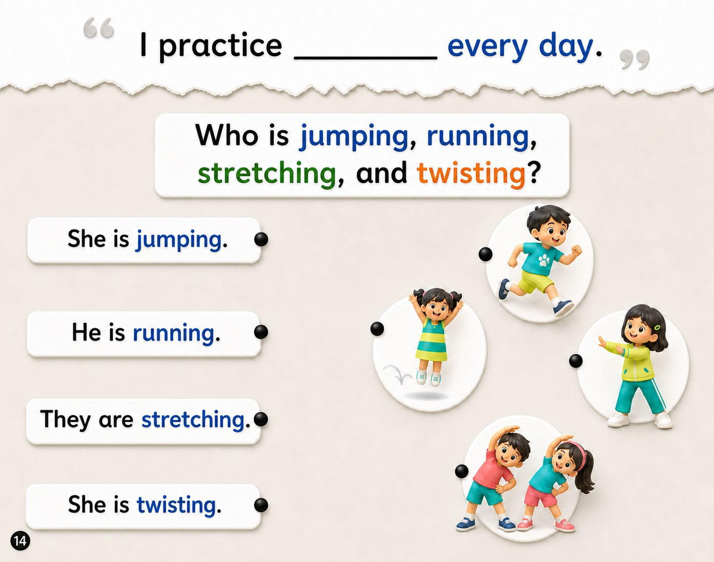

⬅️ Previous Page
📖 Page 5 of 6
Next Page ➡️
🏠 Week 2 Home
Week 2 — What do you practice?
🎵 Week Song
🃏 Flashcards

🔊
Listen to the question.
🔊
🔊
🔊
🔊
▶ Start Activity
×
↻ Try Again
Press Start Activity and listen.